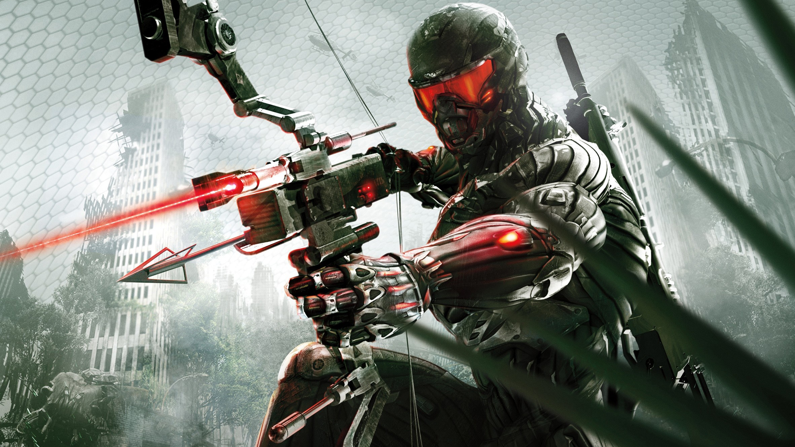
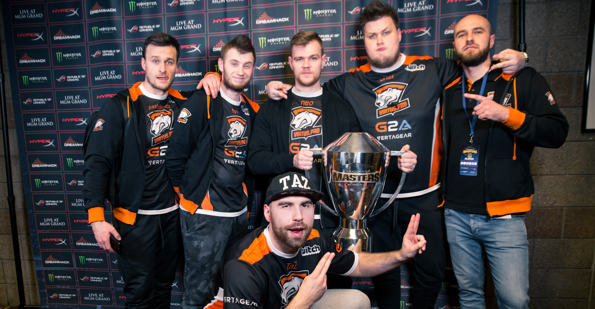

Genres of computer games
SHOOTER GAMES
Most commonly, the purpose of a shooter game is to shoot opponents and proceed through missions without the player character being killed or dying as a result of the player's actions. A shooting game is a genre of video game where the focus is almost entirely on the defeat of the character's enemies using the weapons given to the player.
BATTLEFIELD 3
Battlefield 3 is a first-person shooter video game developed by EA DICE and published by Electronic Arts. It is a direct sequel to 2005's Battlefield 2, and the eleventh installment in the Battlefield franchise. The game was released in North America on 25 October 2011 and in Europe on 28 October 2011 for Microsoft Windows, PlayStation 3, and Xbox 360.
CRYSIS 3
Crysis 3 is a 2013 first-person shooter video game developed by Crytek and published in 2013 by Electronic Arts. It is the third main game of the Crysis series, a sequel to the 2011 video game Crysis 2. The multiplayer portion of the game was developed by Crytek UK. Crysis 3's story revolves around Prophet, a Nanosuit holder who is on a quest to take revenge on the Alpha Ceph, the leader of the Ceph alien race.

CALL OF DUTY: BLACK OPS
Call of Duty: Black Ops is a 2010 first-person shooter video game developed by Treyarch and published by Activision. It was released worldwide in November 2010 for Microsoft Windows, the PlayStation 3, Xbox 360, and Wii, with a separate version for Nintendo DS developed by n-Space. Aspyr later released the game for OS X in September 2012.
MASS EFFECT 3
Mass Effect 3 is an action role-playing video game developed by BioWare and published by Electronic Arts. The third major entry in the Mass Effect series and the final installment of the original trilogy, it was released in March 2012 for Microsoft Windows, Xbox 360, and PlayStation 3. A Wii U version of the game, entitled Mass Effect 3: Special Edition, was later released in November 2012.
Fighting games
Fighting games involve combat between pairs of fighters using highly exaggerated martial arts moves. They typically revolve around primarily brawling or combat sport, though some variations feature weaponry. Games usually display on-screen fighters from a side view, and even 3D fighting games play largely within a 2D plane of motion. Games usually confine characters to moving left and right and jumping, although some games such as Fatal Fury: King of Fighters allow players to move between parallel planes of movement. Recent games tend to be rendered in three dimensions and allow side-stepping, but otherwise play like those rendered in two dimensions.
TEKKEN 7
Tekken 7 is a fighting game developed and published by Bandai Namco Entertainment. It is the ninth overall installment in the Tekken series. Tekken 7 had a limited arcade release in March 2015. An updated arcade version, Tekken 7: Fated Retribution, was released in July 2016, and features expanded content including new stages, costumes, items and characters. The home versions released for PlayStation 4, Xbox One and Microsoft Windows in June 2017 were based on Fated Retribution.
Mortal kombat 11
Mortal Kombat 11 is a fighting game developed by NetherRealm Studios and published by Warner Bros. Interactive Entertainment. Running on a heavily modified version of Unreal Engine 3, it is the eleventh main installment in the Mortal Kombat series and a sequel to 2015's Mortal Kombat X. Announced at The Game Awards 2018, the game was released in North America and Europe on April 23, 2019 for Microsoft Windows, Nintendo Switch, PlayStation 4 and Xbox One.
SoulCalibur VI
Soulcalibur VI is a fighting game developed by Bandai Namco Studios and published by Bandai Namco Entertainment for the PlayStation 4, Xbox One, and Microsoft Windows in 2018. It is the seventh main installment in the Soulcalibur series. Following the tradition of prior installments of the Soulcalibur series, Soulcalibur VI's gameplay involves two weapons-wielding combatants battling against one another using a 3D system.
Injustice 2
Injustice 2 is a 2017 fighting video game based upon the DC Universe. It is developed by NetherRealm Studios and published by Warner Bros. Interactive Entertainment. It is the sequel to 2013's Injustice: Gods Among Us. The game was initially released in May 2017 for the PlayStation 4 and Xbox One; a Microsoft Windows version was released later in November 2017. An expanded version of the game, titled Injustice 2: Legendary Edition, was released in March 2018.
STRATEGY GAMES
Even though there are many action games that involve strategic thinking, they are seldom classified as strategy games. A strategy game is typically larger in scope, and their main emphasis is on the player's ability to outthink their opponent. Strategy games rarely involve a physical challenge, and tend to annoy strategically minded players when they do. Compared to other genres such as action or adventure games where one player takes on many enemies, strategy games usually involve some level of symmetry between sides. Each side generally has access to similar resources and actions, with the strengths and weaknesses of each side being generally balanced.
STARCRAFT 2
StarCraft II: Wings of Liberty is a science fiction real-time strategy video game developed and published by Blizzard Entertainment. It was released worldwide in July 2010 for Microsoft Windows and Mac OS X. A sequel to the 1998 video game StarCraft and the Brood War expansion pack, the game is split into three installments: the base game, subtitled Wings of Liberty, an expansion pack, Heart of the Swarm, and a stand-alone expansion pack, Legacy of the Void.
WARHAMMER 40000
Warhammer 40,000 is a miniature wargame produced by Games Workshop. It is the most popular miniature wargame in the world, especially in Britain. The first edition of the rulebook was published in September 1987, and the ninth and current edition was released in July 2020. As in other miniature wargames, players enact battles using miniature models of warriors and fighting vehicles. The playing area is a tabletop model of a battlefield, comprising models of buildings, hills, trees, and other terrain features.
WARCRAFT 3: Frozen Throne
Warcraft III: The Frozen Throne is the expansion pack for Warcraft III: Reign of Chaos, a real-time strategy video game by Blizzard Entertainment. It was released worldwide on July 1, 2003 for Microsoft Windows and Mac OS X. The Frozen Throne builds upon the story of Reign of Chaos and depicts the events after the main game's conclusion. The single-player unfolds from the perspective of two new protagonists—the Night Elf warden Maiev Shadowsong and the Blood Elf prince Kael'Thas.
TIBERIUM WARS
Command & Conquer 3: Tiberium Wars is a 2007 science fiction real-time strategy video game developed and published by Electronic Arts for Windows, Mac OS X and Xbox 360 platforms, and released internationally in March 2007. The game is a direct sequel to the 1999 game Command & Conquer: Tiberian Sun, and takes place roughly seventeen years after the game's expansion pack Firestorm, in which Tiberium has grown to become a considerable threat to the planet.
MMORPG GAMES
The majority of popular MMORPGs are based on traditional fantasy themes, often occurring in an in-game universe comparable to that of Dungeons & Dragons. Some employ hybrid themes that either merge or replace fantasy elements with those of science fiction, sword and sorcery, or crime fiction. Others draw thematic material from American comic books, the occult, and other genres. These elements are often developed using similar tasks and scenarios involving quests, monsters, and loot.
AION
Aion: The Tower of Eternity is a massively multiplayer online role-playing game (MMORPG) released by NCSOFT. The game combines PvP and PvE (a concept the developers call PvPvE) in a fantasy game environment. As of May 20, 2009, Aion had 3.5 million subscribers in Asia. AION's first major expansion pack was released to North America and Europe on September 7, 2010 under the name AION: Assault on Balaurea. On February 29, 2012 AION changed its publisher in Europe.
Skyforge
Skyforge is a free-to-play massively multiplayer online role-playing game developed by Allods Team in collaboration with Obsidian Entertainment, and published by My.com. Set on the planet Aelion, Skyforge fuses elements of Science fiction and fantasy in its visuals and storytelling and sees players exploring the world as an immortal who must strive to become a god and defend the planet from alien invasion from other worlds.
LINEAGE 2
Lineage II is a massive multiplayer online role-playing game (MMORPG) for Microsoft Windows and the second game in the Lineage series. It is a prequel to Lineage and is set 150 years before the firstgame. It has become popular since its October 1, 2003 launch in South Korea, reporting 1,000,918 unique users during the month of March 2007. To date, the game has been played by more than 14 million users, most of whom are based in Asia.
LOST ARK
Lost Ark is a massively multiplayer online action role-playing game (MMOARPG) developed by Tripod Studio and Smilegate's game development subsidiary Smilegate RPG. It has been fully released in the Korean region on December 4, 2018. It's in open beta test (OBT) in the Russian region and it has started its closed beta test (CBT) registration in the Japanese region on June 25, 2020. The game is also very likely coming to European and North American regions sometime in 2021.
Racing games
Simulation style racing games strive to convincingly replicate the handling of an automobile. They often license real cars or racing leagues, but will sometimes use fantasy cars built to resemble real ones if unable to acquire an official license for them. Vehicular behavior physics are a key factor in the experience.
GRAN TURISMO V
Gran Turismo 5, (commonly abbreviated as GT5) is a racing video game developed by Polyphony Digital and published by Sony Computer Entertainment. It was released for the PlayStation 3 on November 24, 2010 in Europe and North America, and November 25, 2010 in Japan and Australasia, and is the fifth main installment and the tenth overall in the Gran Turismo video game series. It was preceded by the Prologue version and is the first main entry of the series to be released for the PlayStation 3.
NFS: Heat
Need for Speed Heat (stylized as NFS Heat) is a racing video game developed by Ghost Games and published by Electronic Arts for Microsoft Windows, PlayStation 4 and Xbox One. It is the twenty-fourth installment in the Need for Speed series and commemorates the series' 25th anniversary. It was released on November 8, 2019. Need for Speed Heat is a racing game set in an open world environment called Palm City, a fictionalised version of the city Miami, Florida and its surrounding area.
NFS: Pro street
Need for Speed: ProStreet is a 2007 racing video game developed by EA Black Box and published by Electronic Arts. It is the eleventh installment in the Need for Speed series and a follow-up to Need for Speed: Carbon. Unlike its immediate predecessors, which focused on the contemporary illegal street racing scene, ProStreet focuses on legal circuit races that take place on closed tracks. The game blends elements of both sim and arcade racing games, requiring players to customize and tune cars for various race modes.
GRAN TURISMO VI
Gran Turismo 6 is a racing video game developed by Polyphony Digital and published by Sony Computer Entertainment for the PlayStation 3. It is the sixth major release and twelfth game overall in the Gran Turismo video game series. It was released worldwide on December 6, 2013. It was met with positive reception and was a financial success. New features included the addition of more cars and tracks, improvements to the car customisation options, and partnerships with the Goodwood Festival of Speed.
ESPORTS DISCIPLINES
Esports is a form of competition using video games. Esports often takes the form of organized, multiplayer video game competitions, particularly between professional players, individually or as teams. Although organized competitions have long been a part of video game culture, these were largely between amateurs until the late 2000s, when participation by professional gamers and spectatorship in these events through live streaming saw a large surge in popularity. By the 2010s, esports was a significant factor in the video game industry, with many game developers actively designing and providing funding for tournaments and other events.
World Of Tanks
World of Tanks (WoT) is a massively multiplayer online game developed by Belarusian company Wargaming, featuring mid-20th century (1930s–1960s) era combat vehicles. It is built upon a freemium business model where the game is free-to-play, but participants also have the option of paying a fee for use of "premium" features. The focus is on player vs. player gameplay with each player controlling an armored vehicle.
Warface
Warface is a free-to-play online first-person shooter game developed by Crytek Kiev, co-produced by Crytek Seoul, and published by My.com. The game was developed with Crytek's in-house CryEngine 3. Warface centers around online firefights in player versus player (PvP) matches, with microtransactions allowing players to purchase weapons, equipment, and cosmetic gear.
Dota 2
Dota 2 is a multiplayer online battle arena (MOBA) video game developed and published by Valve. The game is a sequel to Defense of the Ancients (DotA), which was a community-created mod for Blizzard Entertainment's Warcraft III: Reign of Chaos. Dota 2 is played in matches between two teams of five players, with each team occupying and defending their own separate base on the map.
Counter-Strike: GO
Counter-Strike: Global Offensive (CS:GO) is a multiplayer first-person shooter developed by Valve and Hidden Path Entertainment. It is the fourth game in the Counter-Strike series. The game pits two teams, Terrorists and Counter-Terrorists, against each other in different objective-based game modes. There are eight official game modes, all of which have distinct characteristics specific to that mode.
Valorant
Valorant (stylized as VALORANT) is a free-to-play hero shooter developed and published by Riot Games. Valorant is a team-based tactical shooter and first-person shooter set in the near future. Players play as one of a set of agents, characters designed based on several countries and cultures around the world. Every player starts each round with a "classic" pistol and one or more "signature ability" charge.

Fortnite
Fortnite is an online video game developed by Epic Games and released in 2017. It is available in three distinct game mode versions that otherwise share the same general gameplay and game engine: Fortnite: Save the World, a cooperative hybrid-tower defense-shooter-survival game for up to four players to fight off zombie-like creatures and defend objects with traps and fortifications they can build.

League of Legends
League of Legends is a 2009 multiplayer online battle arena video game developed and published by Riot Games, inspired by Defense of the Ancients. In the game, two teams of five players battle in player versus player combat, each team occupying and defending their own half of the map. Each of the ten players controls a character, known as a "champion", with unique abilities and differing styles of play.
PUBG
PlayerUnknown's Battlegrounds (PUBG) is an online multiplayer battle royale game developed and published by PUBG Corporation, a subsidiary of South Korean video game company Bluehole. In the game, up to one hundred players parachute onto an island and scavenge for weapons and equipment to kill others while avoiding getting killed themselves.
Esports teams
Natus Vincere
Natus Vincere (Latin for "born to conquer"), abbreviated Na'Vi, is an esports organization based in Kyiv, Ukraine. Founded in 2009, the organization has teams and players competing in various games, such as Counter Strike: Global Offensive, Dota 2, FIFA, World of Tanks, Paladins, League of Legends, PlayerUnknown's Battlegrounds, Apex Legends, Rainbow Six Siege, and Fortnite.
Na'Vi Counter-Strike team was the first in history to win three premier tournaments—Intel Extreme Masters, Electronic Sports World Cup, and World Cyber Games 2010—in one calendar year. Their Dota 2 squad won The International 2011, becoming the most successful esports organization at the time.
Na'Vi Counter-Strike team was the first in history to win three premier tournaments—Intel Extreme Masters, Electronic Sports World Cup, and World Cyber Games 2010—in one calendar year. Their Dota 2 squad won The International 2011, becoming the most successful esports organization at the time.
Team Secret
Team Secret is a global esports team formed in 2014, best known for their Dota 2 team. In March 2016, Team Secret picked up an international female Counter-Strike: Global Offensive team. In April 2016, Team Secret expanded into the world of Street Fighter with Lee "Poongko" Chung-Gon as their first World Warrior, and also signed Otto "Silent Wolf" Bisno as a Super Smash Bros.
Melee player. In July 2018 Team Secret entered into competitive Age of Empires 2 after acquiring key members from Team TyRanT. In August 2018, Team Secret expanded into Rainbow Six Siege Pro League by signing Team IDK.
Melee player. In July 2018 Team Secret entered into competitive Age of Empires 2 after acquiring key members from Team TyRanT. In August 2018, Team Secret expanded into Rainbow Six Siege Pro League by signing Team IDK.

Virtus Pro
Virtus.pro (VP) is an esports organization based in Russia. Founded in 2003, the organization currently has players competing in such games as Counter-Strike: Global Offensive, Dota 2, Rainbow Six Siege, PlayerUnknown's Battlegrounds, Fortnite, Apex Legends, Starcraft II, Hearthstone, Paladins, Quake Champions and Heroes Of The Storm.
In November 2015, the team got an investment of over US$100,000,000 from Alisher Usmanov's USM Holdings.Since 2015 Virtus.pro is a part of the ESforce esports holding. Virtus.pro's Dota 2 team has participated in multiple Majors, winning record (tied with Team Secret) 5 of them and becoming the best Dota Pro Circuit first season team.
In November 2015, the team got an investment of over US$100,000,000 from Alisher Usmanov's USM Holdings.Since 2015 Virtus.pro is a part of the ESforce esports holding. Virtus.pro's Dota 2 team has participated in multiple Majors, winning record (tied with Team Secret) 5 of them and becoming the best Dota Pro Circuit first season team.
Team Liquid
Team Liquid is a multi-regional professional esports organization based in the Netherlands that was founded in 2000. With the release of StarCraft II: Wings of Liberty, Team Liquid signed their first professional players. In 2012, Team Liquid acquired a North American Dota 2 team, marking their first venture into multi-genre management.
In January 2015, Team Liquid officially merged with Team Curse under the Liquid banner, bringing on Steve Arhancet, his supporting staff, and former Curse League of Legends, Street Fighter, and Super Smash Bros. teams. Their European Dota 2 squad won The International 2017, which had one of the largest prize pool for any esports tournament in history.
In January 2015, Team Liquid officially merged with Team Curse under the Liquid banner, bringing on Steve Arhancet, his supporting staff, and former Curse League of Legends, Street Fighter, and Super Smash Bros. teams. Their European Dota 2 squad won The International 2017, which had one of the largest prize pool for any esports tournament in history.
Faze Clan
FaZe Clan (formerly FaZe Sniping) is a professional esports and entertainment organization headquartered in Los Angeles, United States. Founded on May 30, 2010, the organization has players from around the world, across multiple games.
Including Call of Duty, Counter-Strike: Global Offensive, PlayerUnknown's Battlegrounds, Tom Clancy's Rainbow Six Siege, FIFA, Valorant, Fortnite Battle Royale and Rocket League. In 2020, the organization expanded into the Asian market, acquiring a Thai PUBG Mobile and FIFA Online roster.
Including Call of Duty, Counter-Strike: Global Offensive, PlayerUnknown's Battlegrounds, Tom Clancy's Rainbow Six Siege, FIFA, Valorant, Fortnite Battle Royale and Rocket League. In 2020, the organization expanded into the Asian market, acquiring a Thai PUBG Mobile and FIFA Online roster.